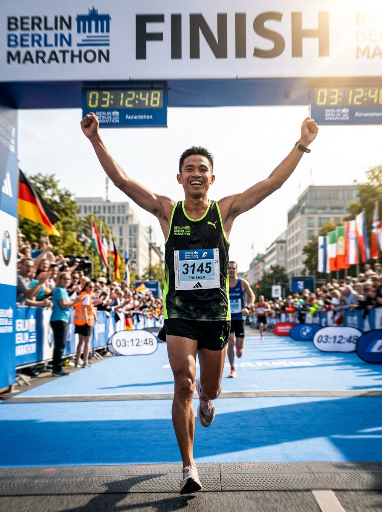

//Personal Horizon
Away from the Screen.
Discipline, endurance, and systems thinking apply just as much to athletic milestones and personal pursuits as they do to high-availability engineering.

Race Day · Finish Line
Real Hasrul
01 /Running
Road Racing & Marathon
Distance running is the ultimate feedback loop: training blocks, heart rate pacing, cadence tuning, and psychological resilience under fatigue.
- 5K Best
- 24:18
- 4:51 /km
- 10K Best
- 52:30
- 5:15 /km
- Half Best
- 1:58:14
- 5:36 /km
Recent Milestones
- Kuala Lumpur Standard Chartered Marathon · Half Marathon (21.1 km)
- Putrajaya Night Run · 10 km Finisher
- Petronas Tower Run · Vertical Tower Challenge